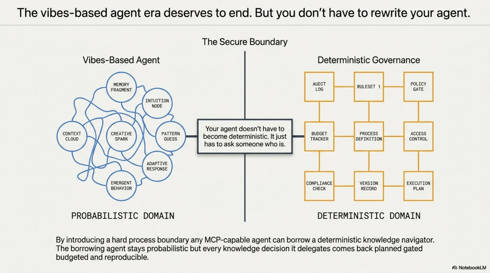
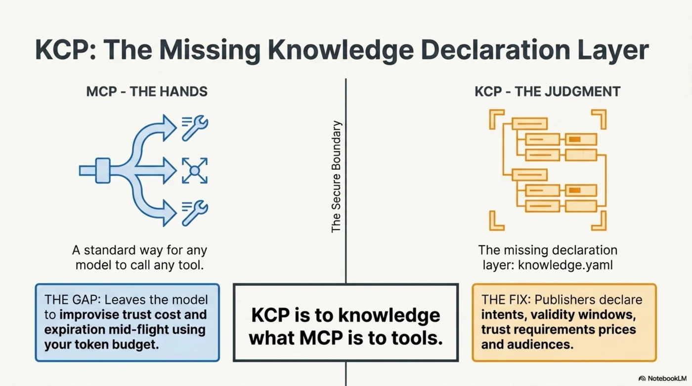

The Borrowed Leash: Determinism as a Service for the Agentic Web¶
Yesterday's post ended with an architectural claim: the model belongs at the edge, on a leash, and the vibes-based agent era deserves to end. The obvious objection arrived on schedule: "Nice. But I already have an agent. I'm not rewriting it around your planner."
Good. You don't have to.
kcp-agent 0.3.0 ships the answer as one command:
That line hands any MCP-capable agent — Claude Code, an IDE, your homegrown orchestrator, somebody else's swarm — a deterministic knowledge navigator as a set of tools. The borrowing agent stays exactly as probabilistic as it was this morning. But every knowledge decision it delegates across that boundary comes back planned, gated, budgeted, and reproducible.
Your agent doesn't have to become deterministic. It just has to ask someone who is.
![The Borrowed Leash: Bringing Deterministic Control to AI Agents — the bridge at a glance. On the left, the vibes-based agent era: a probabilistic AI agent improvising knowledge navigation mid-flight, with unreliable data trust and unpredictable token spending — unconfirmed budget, unconfirmed identity, everything "suggestions" in a system prompt. In the middle, the KCP/MCP bridge (kcp-agent 0.3.0) and the four tools that cross it: kcp_plan the navigator generating deterministic load plans with selections, skips, and budget decisions without moving content or calling a model; kcp_load the fetcher delivering the actual content of eligible units to the caller's own model for synthesis; kcp_validate the auditor linting the knowledge.yaml manifest. On the right, deterministic knowledge control: new in 0.3.0 — identity and economics, 100% deterministic gating with enforced role, credentials, and attestations across the MCP boundary; an enforced knowledge economy with x402 per-request pricing, budget ceilings enforced and spend committed before a single byte moves; and the strategic advantages — the fleet problem solved (twenty agents, one signed manifest instead of twenty prompts), zero-token navigation with no inference cost and no API keys to leak, verifiable provenance via sha256-pinned manifests, and the 03:00 incident scenario where a SOC-provisioned responder borrows institutional authority that an unprovisioned agent cannot present.](../../../../../assets/images/kcp-agent-030-00-borrowed-leash-overview.webp)
Two protocols, one seam¶
MCP solved the hands problem: a standard way for any model to call any tool. What it deliberately didn't solve is the judgment problem — which knowledge to trust, what it costs, when it expires, who may read it. Every MCP client answers those questions the same way: the model improvises, mid-flight, with your token budget.

KCP is the missing declaration layer: publishers describe their knowledge in a knowledge.yaml — intents, validity windows, trust requirements, prices, audiences, federation. And kcp-agent is the pure function that turns those declarations into an inspectable plan.

KCP is to knowledge what MCP is to tools — and kcp-agent mcp is the seam where they meet. Four tools cross it:
| Tool | What crosses the boundary |
|---|---|
kcp_plan |
the deterministic load plan — selections in order, skips with written reasons, federation and budget decisions. No content moved, no model called. |
kcp_load |
the plan plus the content of load-eligible units — the caller's own model synthesizes; kcp-agent never spends the caller's tokens and needs no API key |
kcp_validate |
lint for a knowledge.yaml — structural errors, navigation-weakening warnings |
kcp_replay |
the cross-examination: hand back a plan artifact and get identical or drifted, per manifest, with the fields that moved |
![The four tools that cross the seam. kcp_plan carries the deterministic load plan — selections in order, skips with written reasons, federation and budget decisions, no content moved and no model called. kcp_load carries the plan plus the content of load-eligible units — the caller's own model synthesizes; kcp-agent never spends the caller's tokens and needs no API key. kcp_validate lints a knowledge.yaml for structural errors and navigation-weakening warnings. kcp_replay is the cross-examination: hand back a plan artifact and get identical or drifted, per manifest, with the fields that moved.](../../../../../assets/images/kcp-agent-030-04-four-tools.webp)
The first three shipped in 0.2.0. What 0.3.0 adds is the part that makes the bridge load-bearing rather than decorative — and it's the part worth a post.
What 0.3.0 uncovered: identity and economics cross the boundary¶
In 0.2.0, the MCP surface took the planner's basic knobs — task, manifest, date, budget. Useful, but the interesting gates were unreachable: a knowledge web that demands attestation or credentials would simply plan closed for every MCP caller.
0.3.0 gives kcp_plan/kcp_load the CLI's full capability surface: role, methods (payment methods), credentials, attest (attestation provider). Which means an MCP client can now present who it is and what it can settle — and the planner answers with exactly the gates a command-line agent would get.
This sounds like a feature list. It's actually a claim about the agentic web: identity, trust, and economics are properties of the knowledge boundary, not of the agent's prompt. The publisher declared require_attestation and access: restricted in the manifest; the planner enforces it; the MCP transport just carries the capabilities across. No system-prompt diplomacy, no "please only read documents you are authorized to read."
Watch it work. The scenario is the 03:00 incident world — a zero-day in a fictional energy company's broker software, four federated parties: the internal hub, a national CERT with a signed manifest, the vendor, and a commercial intel feed where TLP:AMBER is an enforced gate, not a courtesy label. This is the shipping demo (node examples/demos.js leash), a scripted foreign JSON-RPC client with no SDK, and CI asserts this output:
$ kcp-agent mcp # a foreign agent connects over stdio
server: kcp-agent 0.3.0 · tools: kcp_plan, kcp_load, kcp_validate, kcp_replay
$ tools/call kcp_plan {as_of: 2026-07-08} # 03:00 — the borrowing agent is unprovisioned
○ incident-runbook — restricted: requires attestation the agent cannot present;
access 'restricted': agent holds no credentials
$ tools/call kcp_plan {as_of: 2026-07-09, attest, credentials: [mtls],
methods: [free,x402], budget: 0.5}
● incident-runbook — gates open, same reasons ledger
committed 0.4/0.5 USDC · 0.1 remaining
The unprovisioned caller doesn't get an error, and doesn't get quietly served a degraded answer either. It gets a plan with the closed gates written down — attestation it cannot present, credentials it does not hold. Provision the responder and the same question opens the runbook, buys 0.40 USDC of intel under a 0.50 ceiling, and writes the arithmetic into the ledger. Same manifest, same task, two honest answers.
![The 03:00 incident, planned twice. At 03:00 the unprovisioned borrowing agent asks over MCP and gets a plan with the closed gates written down: the incident runbook restricted — requires attestation the agent cannot present, access restricted, agent holds no credentials. The SOC provisions the responder — attestation from soc.nordlys.example, an mTLS credential, payment methods free and x402 under a 0.5 USDC ceiling — and the same question opens the runbook and commits 0.4 of 0.5 USDC, arithmetic in the ledger. Same manifest, same task, two honest answers.](../../../../../assets/images/kcp-agent-030-05-0300-incident-gates.webp)
Evidence that survives a process boundary¶
Here's the deeper thing the bridge uncovers, and it took kcp_replay to see it.
When agent A calls agent B for knowledge, the artifact that comes back is normally just… prose. A claims B said something; B has logs; nobody can verify anything without trusting everybody. The agentic web is currently being built on this — chains of agents vouching for each other with vibes.
A kcp plan artifact is different in kind. It pins the sha256 of every manifest it planned over and echoes every input that shaped it. So when the artifact crosses the MCP boundary, the caller — or an auditor, or a different agent, six months later — can hand it back:
$ tools/call kcp_replay {artifact} # a second session, later — cross-examination
✓ nordlys-energi-hub: identical
✓ fjellcert-advisories: identical
✓ quaymaster-broker: identical
✓ ravnwatch-intel: identical
ok: true
Four federated manifests, re-fetched, re-hashed, re-planned from the echoed inputs, reproduced byte-identically. And because the demo suite is contractually paranoid, the scripted client then does what a real borrowing agent might: it edits its own evidence, zeroing the spend ledger before handing the artifact on.
$ tools/call kcp_replay {artifact*} # * the client zeroed its own spend ledger
✗ ravnwatch-intel: drifted — plan differs in: budget
ok: false
Caught, with the field named. A plan is evidence; replay is the cross-examination — and 0.3.0 makes the cross-examination available to any MCP client, across any process boundary, against an artifact produced by somebody else's session. Multi-agent systems have talked about "audit trails" for two years. This is what one looks like when it can defend itself.
![Evidence that survives a process boundary. A kcp plan artifact pins the sha256 of every manifest it planned over and echoes every input that shaped it, so a caller, an auditor, or a different agent six months later can hand it back for cross-examination. Four federated manifests re-fetched, re-hashed, re-planned from the echoed inputs — reproduced byte-identically. And when the borrowing agent edits its own evidence, zeroing the spend ledger before handing the artifact on: caught, with the field named — ravnwatch-intel drifted, plan differs in budget.](../../../../../assets/images/kcp-agent-030-06-evidence-cross-examination.webp)
What this opens up¶
Once deterministic navigation is a service rather than an architecture commitment, several doors open at once.
1. The fleet problem becomes a manifest problem. An organization running twenty MCP-capable agents currently governs knowledge access twenty times, in twenty system prompts, none of which are enforced. Put the policy where it belongs — in signed manifests, behind one kcp-agent mcp — and every agent in the fleet gets the same gates, the same skip-reasons, the same budget arithmetic. Governance stops being a prompt-engineering genre and becomes configuration. When the policy changes, you change a manifest, not N prompts — and the change is versioned, signed, and temporal (valid_from did the rollout for you).
![Shift one: the fleet problem becomes a manifest problem. An organization running twenty MCP-capable agents currently governs knowledge access twenty times, in twenty system prompts, none of which are enforced. Put the policy in signed manifests behind one kcp-agent mcp and every agent in the fleet gets the same gates, the same skip-reasons, the same budget arithmetic. Governance stops being a prompt-engineering genre and becomes configuration: when policy changes, you change one manifest — versioned, signed, and temporal.](../../../../../assets/images/kcp-agent-030-07-fleet-problem.webp)
2. Provisioning maps to organizations, not prompts. In the 03:00 story, the SOC provisions the responder — attestation from soc.nordlys.example, an mTLS credential, a funded wallet with a ceiling. The agent borrows authority the way an employee does: from the institution, scoped, revocable, on the record. That's the shape enterprises actually work in. The alternative — pasting credentials into context windows and hoping — is the shape breaches work in.
3. A real knowledge economy gets an enforcement point. We built the first till on the agentic web — publishers pricing knowledge per-request over x402. The bridge means the buyer side is now installable into any agent: ceilings enforced in the plan, spend committed before a byte moves, unaffordable units skipped with the arithmetic shown. Agents that shop need budgets that hold. methods: [free,x402], budget: 0.5 over MCP is what that looks like.
![Shifts two and three: provisioning maps to organizations, and the knowledge economy gets an enforcement point. The SOC provisions the responder — attestation, an mTLS credential, a funded wallet with a ceiling — so the agent borrows authority the way an employee does: from the institution, scoped, revocable, on the record. And on the buyer side of the first till on the agentic web, ceilings are enforced in the plan, spend is committed before a byte moves, and unaffordable units are skipped with the arithmetic shown.](../../../../../assets/images/kcp-agent-030-08-provisioning-and-economy.webp)
4. Zero-token navigation, zero API keys. kcp-agent never calls a model when serving MCP — planning is a pure function, and kcp_load returns content for the caller's model to synthesize. The navigator adds no inference cost, holds no API key, and can't leak one. For anyone doing the economics of agent deployments, an entire class of cost and secret-handling just left the building.
5. Federation means one socket, every knowledge web. The mcp command takes no flags — the manifest location is a parameter of every call. One server instance serves the company hub, the vendor's manifest, the national CERT, a partner's federation — walking follow chains fail-closed, verifying ed25519 signatures where declared, threading one budget across the whole tree. The agent's entire knowledge landscape hangs off a single stdio socket.
![Shifts four and five: zero-token navigation with zero API keys, and one socket for every knowledge web. kcp-agent never calls a model when serving MCP — planning is a pure function, kcp_load returns content for the caller's own model to synthesize, so the navigator adds no inference cost, holds no API key, and can't leak one. And one server instance serves the company hub, the vendor's manifest, the national CERT, a partner's federation — walking follow chains fail-closed, verifying ed25519 signatures where declared, threading one budget across the whole tree.](../../../../../assets/images/kcp-agent-030-09-zero-token-one-socket.webp)
The honest version of the multi-agent story¶
The industry's multi-agent narrative is currently additive: more agents, more autonomy, more improvisation, the swarm will sort it out. Our experience keeps pointing the other way: the systems that survive contact with compliance, procurement, and incident review are the ones that subtract — that take entire categories of decision away from the model and give them to something that can testify.
The KCP/MCP bridge is that subtraction, packaged as an addition. Nothing about your agent changes. It gains four tools. But the knowledge decisions flowing through those tools acquire properties no prompt can grant: reproducibility, written refusals, enforced ceilings, verifiable provenance, and artifacts that catch their own tampering.
The borrowed leash is still a leash. That's the value.
![The subtraction, packaged as an addition. The industry's multi-agent narrative is additive — more agents, more autonomy, more improvisation. The systems that survive contact with compliance, procurement, and incident review are the ones that subtract: they take entire categories of decision away from the model and give them to something that can testify. Nothing about your agent changes; it gains four tools. But the knowledge decisions flowing through them acquire properties no prompt can grant — reproducibility, written refusals, enforced ceilings, verifiable provenance, and artifacts that catch their own tampering. The borrowed leash is still a leash. That's the value.](../../../../../assets/images/kcp-agent-030-10-subtraction-as-addition.webp)
# your agent, five seconds from now
claude mcp add kcp -- npx -y kcp-agent mcp
# the whole bridge, narrated, no mocks
git clone https://github.com/Cantara/kcp-agent && cd kcp-agent
npm ci && npm run build && node examples/demos.js leash
- The Arena (match ⑤ is the 03:00 incident, live in your browser): cantara.github.io/kcp-agent
- npm: npmjs.com/package/kcp-agent — 0.3.0, trusted publishing, provenance
- Source (Apache-2.0): github.com/Cantara/kcp-agent
→ github.com/Cantara/kcp-agent
Series: Knowledge Context Protocol
← The Vibes-Based Agent Era Deserves to End · Part 38 of 49 · Hiring by the Book: A Defendable HR Agent on a Regulatory Knowledge Web →